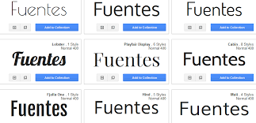
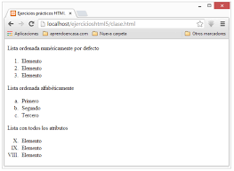
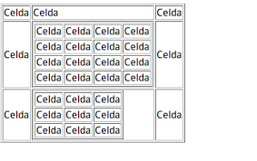
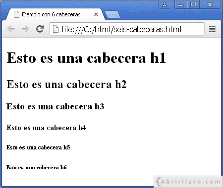

| ETIQUETAS | FUNCION | EJEMPLO |
| h1 | Los elementos de encabezado implementan seis niveles de encabezado del documento | |
| TIPOS DE LETRA | En pocas palabras, este término se utiliza para describir una fuente que se instala universalmente en todos los dispositivos.. |  |
| LISTAS | Las listas en HTML ordenadas son aquellas que nos muestran los elementos de la lista en orden. Para representar el orden tendremos los elementos numerados |  |
| TABLAS | conjunto estructurado de datos distribuidos en filas y columnas (datos tabulados). Una tabla permite buscar con rapidez y facilidad valores entre diferentes tipos de datos que indiquen algún tipo de conexión. |  | ENCABEZADOS | Un encabezado HTML, o header en inglés, es una etiqueta de título que utilizamos dentro de una página web para resaltar la temática y sub-temáticas del contenido. En SEO, estos encabezados, son importantes tanto para los usuarios como para Google, ya que les ayuda a entender mejor la estructura temática de una URL. |  |